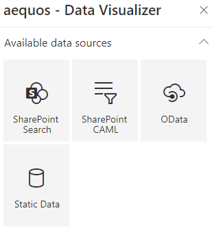
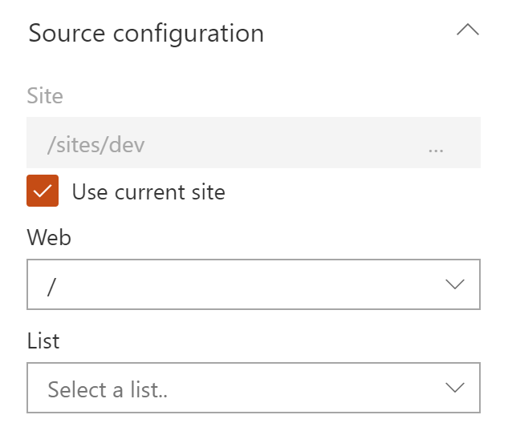
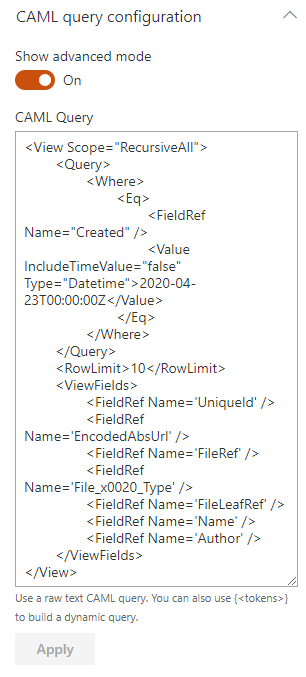
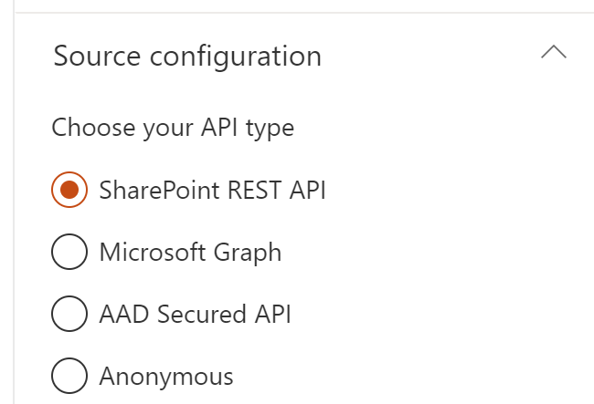
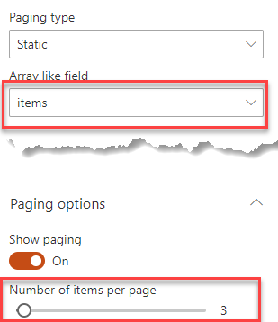
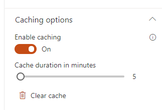

Data sources¶
Builtin data sources¶
By default, the following data sources are provided:

Be careful, when you switch the data source in the property pane, all the previous data source properties are lost. We do this to avoid polluting the Web Part property bag with multiple useless configurations.
SharePoint Search¶
The 'SharePoint Search' data source retrieve items from the SharePoint search engine.
The SharePoint search is different from the Microsoft Graph search.
Source configuration¶
| Setting | Description | Default value |
|---|---|---|
| Query text | The input query text to pass to the search engine. This setting is not configurable directly in the data source options. To enable it you use go the the third configuration page of the Web Part and selected either a static or dynamic value (Ex: from a connected search box Web Part). See the connection documentation for more information on how to configure this option. This value can be then used in the Query template using the {searchTerms} token. Also this value can be a Keyword Query Language expression (KQL). |
None |
| Query template | The search query template to use. It allows you to use dynamic tokens according to the context or specifiy conditions that should always apply to the query. | {searchTerms} |
| Result source ID | Can be either a built-in result source ID listed in the dropdown, or a custom result source that you specify. Type the GUID of the result source, or the SCOPE (Level - SearchObjectLevel enumeration) and NAME (SourceName), separated by | (pipe character). For this to take effect, you must press 'Enter' to save the value. Valid scopes are SPSiteSubscription, SPSite, SPWeb. Examples:
|
LocalSharePointResults |
| Selected properties | The SharePoint managed properties to retrieve from the results. They can be used with the same name in layouts and slots afterwards. |
|
| Sort order | The initial results sort order. You will be able to select only 'Sortable' managed properties here. Make sure the selected properties satisfy this criteria in the SharePoint search schema. | None |
| Refinement filters | The initial refinement filters to apply to the query. Both KQL (Keyword Query Language) and FQL (Fast Query Language) expressions work here (Ex: KQL FileType:docx, FQL: FileType:equals("docx")). They will be apply every time to the current search query regarless selected filters from connected Web Parts. Notice: for strign expressions, use " isntead of '. |
None |
| Language of the search request | The language to use for the search request. By default the search request will be made using the current user interface language. This parameter is mainly use to process diacritics, plurals, etc. correctly according to the language. | Current UI language. |
| Enable query rules | Whether or not apply SharePoint query rules. | False |
| Include OneDrive for Business results | Whether or not include OneDrive for business results. | False |
| Enable audience targeting | Whether or not results should be targeted according to the audiences that the current user belongs to. More information about modern audiences and how to configure them. | False |
| Enable localization | If enabled, the Web Part will try to translate the taxonomy term IDs found in result item properties and refinement values to their corresponding label according to the curent UI language. To get it work, you must map a new refinable managed property associated with ows_taxId_ crawled property and turn this toggle 'on':  If enabled and depending how many items are currently displayed, this could be slightly decrease loading performances. If enabled and depending how many items are currently displayed, this could be slightly decrease loading performances. To use translated values in your template, you must use the ' Auto + <property_name>' property format instead of the original property name. For instance, to use translated values of the 'owstaxidmetadataalltagsinfo' property, you must use the 'Autoowstaxidmetadataalltagsinfo' auto created property. |
False |
| Enable multi-geo environment | If your organization expands its Microsoft 365 presence to multiple geographic regions and/or countries within your existing tenant, you can enable it.  Once enabled, the Web Part will include the geo-locations configuration; you can specify an optional list of which geo-locations in the multi-geo tenant to fan the query out. If you don't include this parameter or leave it blank, the query is fanned out to all geo locations. Once enabled, the Web Part will include the geo-locations configuration; you can specify an optional list of which geo-locations in the multi-geo tenant to fan the query out. If you don't include this parameter or leave it blank, the query is fanned out to all geo locations.More information about the Search configuration for Microsoft 365 Multi-Geo. |
False |
SharePoint CAML¶
The 'SharePoint CAML' data source allows you to rerieve items uisng a CAML query built using the interative builder or using an XML text.
Source configuration¶
A CAML query always apply on a SharePoint list or document library. Thus, you must first select one using the following dropdowns:

| Setting | Description | Default value |
|---|---|---|
| Site | The site collection containing the list or document library | By default, it uses the current site collection. However, you can disable the checkmark and search for a specific site. This control uses SharePoint search to get sites looking in the Title and Path managed properties. It means if your sites has been newly created it may not appear immediatly until indexed. |
| Web | The web containing the list. It can be the root web of the selected site collecion or an other subsite. | '/' (root web) |
| List | The list where the CAML query will be applied. | None |
CAML Query configuration¶
To build your CAML query, you have the choice to use the interactive builder or start from scratch using your own XML. See the query schema for CAML to get started.
Using the builder¶
| Setting | Description | Default value |
|---|---|---|
| View Fields | The item fields to return from the. They will be available in your templates with the same name. |
|
| Order by field | An optional field to sort results. If a field is selected, you have the option to select ascending or descending order. | None |
| Search within folders | Enable this option if you want to search in folders recursively in your list or document library. | False |
| Filters | The filter condition builder. From here you can select:
|

Using the advanced mode¶
In advanced mode, you are responsible to wrtie your own CAML query as XML text. You can use tokens {<tokenName>} directly in the text to create dynamic queries.

Tip: to help you get started, you can start writing your query using the builder and then switch to 'Advanced mode'. This way, you will see the underlying generated query. However, from the moment where the CAML query text in advanced mode differ from the one generated by the builder, the builder settings will be lost if you switch back to that mode.
OData¶
The OData data source allows you to get data from the following APIs
- Microsoft Graph: both v1.0 or beta endpoints.
- SharePoint REST API: the current site or an other site in your tenant. Supports v1.0 or v2.0,
- Azure Active Directoy secured API like an Azure function, Azure Web Application, etc.
-
Anonymous API

Microsoft Graph¶
The URL supports the following formats. Tokens can also be used to construct your URL:
me/mehttps://graph.microsoft.com/v1.0/mehttps://graph.microsoft.com/beta/meme/events?$filter=startswith(subject, 'ship')
Before using a Microsoft Graph resource, you need to ensure you allowed the correct API permissions at tenant level. Because you can't define API permissions through the Web Part package declaratively (i.e
webApiPermissions), we recommend you to use the CLI for Microsoft 365 to add correct permissions for your API:
m365 spo serviceprincipal grant add --resource 'Microsoft Graph' --scope 'Mail.Read'
SharePoint REST API¶
The URL supports the following formats. Tokens can also be used to construct your URL
/_api/(will target the current root site if you don't specify anything)<your_site>/_api/(ex: http://mycompany.sharepoint.com/sites/intranet/_api/lists)/_api/v2.0/sites/{site.id}/drive/list/items?expand=fields(select=FileLeafRef,BaseName,FileRef,FSObjType)&$top={itemsCountPerPage}- etc.
You can also use query parameters supported by the API
Azure Active Directory secured API¶
-
Follow this procedure to set up your Azure Active Directory application. Don't forget to add at least the 'user impersonation' permission to be able to call the API endpoint.
Before using an AAD secured resource, you need to ensure you allowed the correct API permissions at tenant level. Because you can't define API permissions through the Web Part package declaratively (i.e
webApiPermissions), we recommend you to use the CLI for Microsoft 365 to add correct permissions for your API:m365 spo serviceprincipal grant add --resource '<aad_app_display_name>' --scope 'user_impersonation' -
Allow your SharePoint domain (ex: https://mycompany.sharepoint.com) as allowed origin in the service or application CORS (Cross-origin resource sharing) settings. Here a procedure for an Azure function.
Anonymous¶
You can also call an API endpoint with no specific authentifcation like an Azure HTTP trigger Function with function code. By default, we use the demo OData v4 services provided by https://www.odata.org/odata-services/ to demonstrate the capability.
Set HTTP headers or body¶
The only method allowed are GET or POST. For each, you have the ability so set your own HTTP headers. The value must be a valid JSON value:
{
"Content-Type": "application/json;odata=verbose",
"Accept": "application/json",
...
}
If you specify a
POSTrequest, you can also benefit of builtin tokens.
{
"ItemsCount": "{itemsCountPerPage}",
"MyProperty": "My Value",
...
}
Pagination¶
For each API type, you can control how the results will be paginated in order to improve performances.

Dynamic paging¶
Use a Dynamic paging if the underlying API you are using supports paging mechanisms (likely using $top and $skip or $skipToken tokens, for instance Microsoft Graph or SharePoint REST API).
Use server-side paging¶
Some APIs like Microsoft Graph or the SharePoint REST API provide a server-side paging functionality (see https://docs.microsoft.com/en-us/graph/paging for more information). Basically, it allows you to paginate results more easily by using a pre-calculated next page link URL instead of building it manually.
If checked, the paging will be based on the @odata.nextLink value from the HTTP response. It means when you will click on the next page button, this value will be used to get the next set of results. Thus, the items count and paging information (i.e first page, current page, next page, previous page, and last page) will be determined automatically as long as you move through pages.
If unchecked, it will be your URL to be executed to get the next page results. In this last scenario you likely want to provide a dynamic URL using builtin tokens.
Example
-
With server-side paging enabled using
@odata.nextLink:/me/messages?$top={itemsCountPerPage} or /me/messages?$top=2Here, the
$skiptoken will be provided automatically in the@odata.nextLinkso you don't have to provide it in the URL. -
Without server-side paging enabled using
$topand$skiptokens:<your_sharepoint_site_url>/_api/lists?$top={itemsCountPerPage}&$skip={startRow}If you want to control the paging by yourself, you will have to provide a
$skipvalue manually using builtin tokens. You can use the{itemsCountPerPage}and{startRow}tokens where{startRow}corresponds to the number or items per page * the current page number (start from 0) and{itemsCountPerPage}to the number of items per page configured in the property pane. The URL and the items count will be resolved dynamically based on these token values as long as you move through pages. Because we can't determine the total number of items, in some cases, the last page could be empty. It happens for example when the 'total items count'/'items count per page' is even (i.e. exact same number of items for each page).
Static paging¶
If performance is not an issue (i.e for a small ammount of data), you can also set a static paging on your data based on a results array. In this case, you will have to provide the response field to use as the array of items to get the total items count. Then, in the common paging settings, configure the desired number items per page to generate pages dynamically.

If you use static paging, don't forget to add a fixed count in your url
/me/messages?$top=10instead of/me/messages?$top={itemsCountPerPage}. Otherwise, you will get only one page every time.
Static Data¶
The 'Static data' is the simplest data source you can use. With this data ssource, items are retrieved from a static JSON object that you define and does not require any asynchronous call.

When to use this data source?¶
This data source allows you to define your own data schema (i.e. fields) that you can consume in your template. However, to be consumed by templates, the data must follow this JSON strcuture:
{
"items": [
{
"<any_property>": "<any_value_of_any_type>",
...
}
],
"<any_other_property>": "<any_value_of_any_type>",
...
}
Don't forget the quotes '"' for property names.
Even if you don't return items, you must specifiy this property. In this case, pass an empty array.
How to use this data source: a practical example¶
Let say you want to display a static list of useful links for your organization on the home page. Open the code editor and enter the following data:

The data could be look like this:
{
"items": [
{
"linkName": "My Company Web Site",
"linkHref": "http://mycompany.com",
"linkOpenBehavior": "_blank"
},
{
"linkName": "My Company Web Site",
"linkHref": "http://mycompany.com",
"linkOpenBehavior": "_blank"
}
],
"numberOfLinks": "2"
}
Now to consume this data, you can either start from an existing layout, or use a custom one. See the templating documentation to know more.
Microsoft Search¶
The 'Microsoft Search' data source retrieve items from the Microsoft search engine.
Source configuration¶
| Setting | Description | Default value |
|---|---|---|
| Entity types to search | The entity types to search. See the Microsoft Search API documentation to see valid combinations. | Drive items (SharePoint & OneDrive) |
| Use beta endpoint | If checked, will use the Microsoft search beta endpoint instead of v1.0 in Microsoft Graph. |
false |
| Sort order | The initial sort order for the results. Sorting is supported only for SharePoint and OneDrive items. The property to be sorted on should be Sortable in the search schema. | ascending |
Warning
Filters (aka 'refiners') are only available with the beta endpoint.
Common settings¶
Common general options for all data sources
| Setting | Description | Default value |
|---|---|---|
| Do not fetch the data at page load | If enabled, the data won't be fetched during the first load of the Web Part. Use this setting if you want to trigger a data fetch only on dynamic external events like selected static filters or a new search box input. | False |
Paging¶
The paging options are available for all data sources.
| Setting | Description | Default value |
|---|---|---|
| Show paging | Hide or display the paging control. | |
| Number of items per page | Specify the number of items to show per page. Depending of the data source, this value will be handled automatically or manually. For instance, the SharePoint Search and SharePoint CAML will take care of this value automatically. However, the OData data source can use this value by usin the {itemsCountPerPage} token to build a dynamic query (ex: $top={itemsCountPerPage}). |
|
| Number of pages to display in range | Determines the number of pages to display in range. | |
| Hide navigation buttons (prev page, next page) | Self explicit. | |
| Hide first/last navigation buttons | Self explicit. | |
| Hide navigation buttons (prev, next, first, last) if they are disabled | Self explicit. |
Data source paging behaviors
Paging is available for all data sources. However, they can handle it differently.
| Data source | Paging behavior | Comments |
|---|---|---|
| SharePoint CAML | Dynamic | Paging is done calculating the next page link based of the last item ID of the current results set. Therefore, pages are "discovered" along the way when browsing, meaning you can only increase the page number by one every time. |
| SharePoint Search | Dynamic | All page links are pre-calculated since the search engine returns the total items count matching the query regardless the page number. It means you can directly go the last page of results matching the query if you want. |
| OData | Dynamic/Static | Dynamic when using the @odata.nextLink information if present ('server-side paging') or $skip or $skipToken in the URL to determine the next page link URL. When dynamic, the pages are "discovered" along the way when browsing. Static when using the items array directly. |
| Static Data | Static | Paging is done statically base on the items array. |
Caching¶
For all data sources, you have the option to cache the data to improve performances during the first page load.

When enabled, only the first page of initial results is cached. By default, a 5 minutes cache is applied. However, you can set your own duration. At any moment you can clear the cache by clicking on the 'Clear cache' button to start over. You data will be cached on the next page refresh.
Notice the data are won't be put in the cache when:
- A filter is selected.
- The current page number is greater than 1.
- The input query text changes.
Data in the cache are stored in the browser local storage under the following name: aequosDataVisualizer_DataSourceDataFirstPage_<WebPart instance ID>.